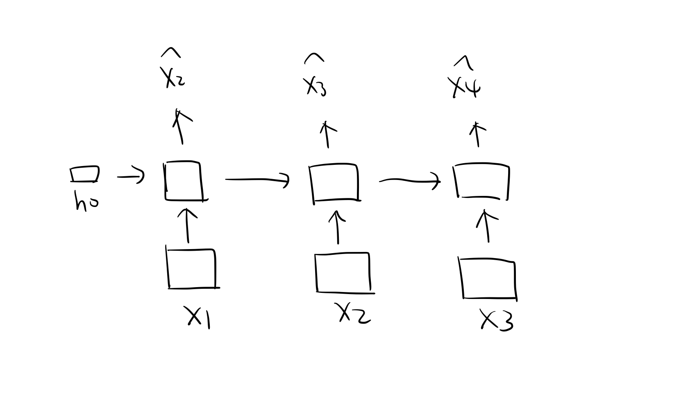
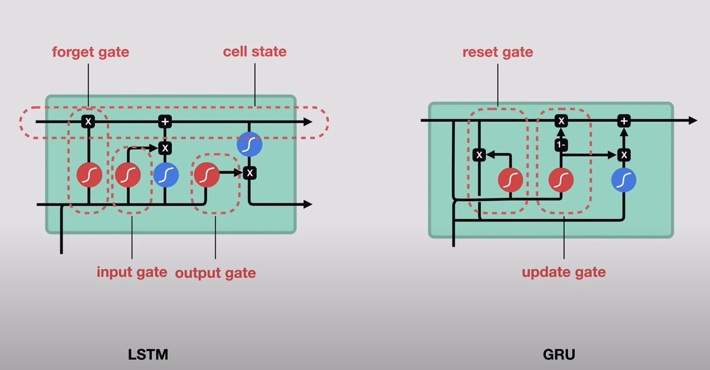
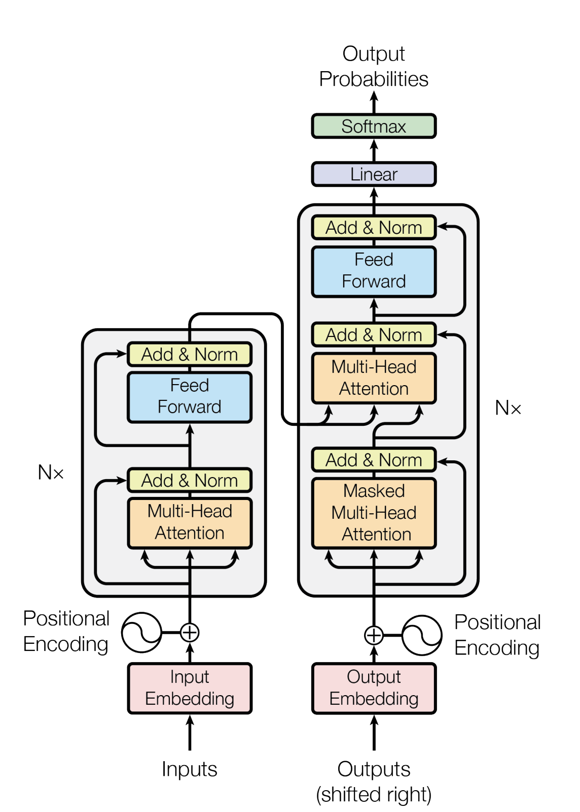
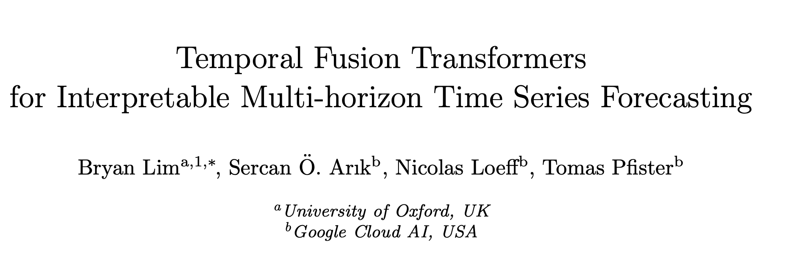

Lecture 6
Advanced Time Series Modelling
Learning objectives
- Develop a neural network for time series forecasting in
pytorch. - Understand how a recurrent neural network differs to a standard feed-forward network and why they are good for sequential data.
Most real world data is time series data!
- Finance: stock prices
- Recommendation systems: user activity logs
- Ticket sales
- many more!
Example: NOMI Forecast predicts future cash flow
| Date | Amount |
|---|---|
| March, 1 | -$43 |
| March, 2 | $500 |
| March, 3 | -$5 |
| March, 4 | -$102 |
| March, 5 | ? |
- Goal: predict future cash flow.
Why using deep learning for real world time series data?
- Traditional methods are primarily designed for univariate time series data.
- But limited when it comes to handling additional features or multivariate data.
Back to NOMI example
| Date | Type | Occupation | Amount |
|---|---|---|---|
| March, 1 | Meal | Student | -$43 |
| March, 2 | Direct deposit | Student | $500 |
| March, 3 | Coffee | Student | -$5 |
| March, 4 | Grocery | Student | -$102 |
| March, 5 | ? |
- Ideally we want to use all the information available to predict future cash flow.
Neural networks for time series data
- Similar to using ML models for time series data in lecture 4.
- Data look like this:
| Time | Target | Lag-1 | Lag-2 | Lag-3 |
|---|---|---|---|---|
| Day 1 | 4 | NaN | NaN | NaN |
| Day 2 | 8 | 4 | NaN | NaN |
| Day 3 | 2 | 8 | 4 | NaN |
| Day 4 | 5 | 2 | 8 | 4 |
| … | … | … | … | … |
- Train a NN that inputs \(X\), outputs \(Y\).
NNs provide a flexible architecture
- Support non-linear relationships.
- Support multivariate inputs/outputs.
- Support classification.
Q: what are the potential issues using neural networks for time series data?
| Time | Target | Lag-1 | Lag-2 | Lag-3 |
|---|---|---|---|---|
| Day 4 | 5 | 2 | 8 | 4 |
| … | … | … | … | … |
We throw away some temporal information when we convert time series data to tabular data.
The model may not be able to capture long term temporal dependencies.
Recurrent neural networks (RNN)
- RNN are NN that are designed for sequential data.
- Learning memory of the past to predict the future.
RNN architecture
Backpropagation through time

RNN in pytorch: data
RNN in pytorch
# define network
class RNN(nn.Module):
def __init__(self, input_size, output_size, hidden_dim):
super().__init__()
self.hidden_dim = hidden_dim
self.rnn_cell = nn.RNN(input_size, hidden_dim, batch_first=True, num_layers=1)
self.fc = nn.Linear(hidden_dim, output_size)
def forward(self, x, hidden):
# x: (batch_size, seq_length, input_size)
# hidden: (1, batch_size, hidden_size)
prediction, hidden = self.rnn_cell(x, hidden)
output = self.fc(prediction)
# output: (batch_size, seq_length, output_size)
# hidden: (1, batch_size, hidden_size)
return output[:, -1, :], hidden
# train network
model = RNN(1, 1, 8)
optimizer = optim.Adam(model.parameters()) # your can use other optimizers
criterion = nn.MSELoss() # you can use other loss functions
for epoch in range(1, 201):
for X, y in dataloader:
memory = None # torch.zeros(1, batch_size, hidden_size)
optimizer.zero_grad()
y_hat, _ = model(X, memory)
loss = criterion(y_hat.flatten(), y)
loss.backward()
optimizer.step()
if epoch % 20 == 0:
print(f"Epoch {epoch:03}. Loss = {loss.item():.4f}")Epoch 020. Loss = 0.0785
Epoch 040. Loss = 0.0648
Epoch 060. Loss = 0.0576
Epoch 080. Loss = 0.0519
Epoch 100. Loss = 0.0470
Epoch 120. Loss = 0.0432
Epoch 140. Loss = 0.0407
Epoch 160. Loss = 0.0398
Epoch 180. Loss = 0.0397
Epoch 200. Loss = 0.0398Different implementaion of truncated backpropagation
- Stateless: no memory between batches.
- Stateful: carry over hidden states between batches.
- Styles of truncated backpropagation
RNN in pytorch: prediction
Issues with RNN
- Vanishing gradient problem.
- Cannot capture long term dependencies.
LSTM and GRU

LSTM or GRU cells look complex, however, they are already implemented in pytorch.
class LSTM(nn.Module):
def __init__(self, input_size, output_size, hidden_dim):
super().__init__()
self.hidden_dim = hidden_dim
self.lstm_cell = nn.LSTM(input_size, hidden_dim, batch_first=True, num_layers=1)
self.fc = nn.Linear(hidden_dim, output_size)
def forward(self, x, hidden):
prediction, (hn, cn) = self.lstm_cell(x, hidden)
output = self.fc(prediction)
return output[:, -1, :], (hn, cn)Transformer: attention is all you need
- Text can be viewed as time series data — a sequence of tokens over time.
- Q: What is the most powerful model for text generation?
- Transformer!


Transformers are now widely used for time series forecasting

PyTorch Forecastingprovides implementations of many state-of-the-art deep learning models.
Additional topics
- Multivariate series:
- Vector Autoregression: Generalization of autoregression.
- Explanatory variables:
- Regression with ARIMA errors: fit a linear regression to your data and then model the residual with an ARIMA model.
- Time series classification:
- We usually use machine learning models.
- Deep learning models support all of these!
Summary
- Statistical models like ARIMA is still popular in industry because it is fast and easy to use.
- Deep learning models can provide improvement over statistical models.
- How to choose between the two?
- Data size: do we have enough data to train a deep learning model?
- Complexity: do we need a model that can capture complex patterns?
- Interpretability: do we need to understand how the model makes predictions?
DSCI 574